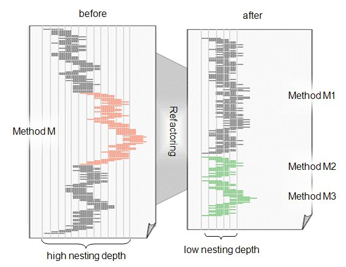

SAP NetWeaver AS ABAP Release 751, ©Copyright 2017 SAP AG. All rights reserved.
ABAP - Keyword Documentation → ABAP Programming Guidelines → General Rules →KISS Principle
Background
The KISS principle says that you should always choose the simplest solution for a problem. KISS is an acronym and can have any of the following meanings (the list is not exhaustive):
The basic statement of the KISS principle is similar to Occam’s razor, which says that in science the preferred theory is the one that makes fewest assumptions to explain observations (see Wikipedia entry on the KISS principle).
Rule
Follow the KISS principle
Follow the KISS principle, and limit the complexity of your programs as far as possible.
Details
The best solution to a problem is usually the one that is as simple, minimalist, and easy to understand as possible, while ensuring stability, understandability, and maintainability in addition to functional correctness.
There are plenty of bad examples of the KISS principle. Why is this?
To develop according to the KISS principle, you should ensure right from the start that the complexity of the program remains manageable. Rules that support this approach relate to the structure and style of programs, in particular comments and complexity.
Note
If existing programs do not follow the KISS principle, and these programs need to be further developed, we recommend refactoring as appropriate. Refactoring refers to the process of manually or automatically improving the structure of programs while retaining the observable program behavior. It improves legibility, understandability, maintainability, and extensibility, as well as considerably reducing the related effort for troubleshooting and functional enhancements (see Wikipedia entry on refactoring). The (incremental) refactoring of an existing program is not only useful for following the above rule, but also for all following rules.
The refactoring of existing code is supported by the required coverage by unit tests. Comprehensive unit tests can ensure that a program behaves in the same way after the refactoring process.
Example
The figure below shows the structure of a method that does not follow the KISS principle. The method consists of approximately 160 statements and reaches a nesting depth of 12 levels. The method, which is only illustrated schematically, is a real example from a live ABAP program, which reached the state shown on the left after continuous additional developments. The method had become so complex that it was practically impossible to make another necessary change, and the developer was forced to refactor in line with the KISS principle.

The result is illustrated on the right of the figure. By splitting the method M into three methods, each with less than 100 statements and a maximum nesting depth of 5 levels, manageable modularization units were created, which follow the rules for complexity, and allow the required modification to be made. Ideally, however, the state shown on the left side of the figure should never occur.